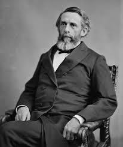

Назва книги: Сама багата людина у Вавилоні
Автор Джордж С. Клейсон
Жанр: Бізнес і підприємство
Рік першого видання: 1926рік

Джорж Семюель Клейсон
7 листопада 1874 - 7 квітня 1957 (82 роки)
Народився в місті Луїзіана (штат Міссурі) 7 листопада 1874. Випускник університету Небраски, служив в американській армії під час Іспано-американської війни. На початку своєї видавничої кар'єри він заснував картографічну компанію «Клейсон Меп» в Денвері (штат Колорадо) й опублікував перший атлас доріг США і Канади. У 1926 опублікував перший із серії своїх нарисів про економію та фінансовий успіх, використовуючи форму притч Стародавнього Вавилона. Ці твори набули широкого поширення в банках і страхових компаніях. Їх прочитали мільйони людей. «Найбагатша людина в Вавилоні» став сучасною класикою економічної літератури.